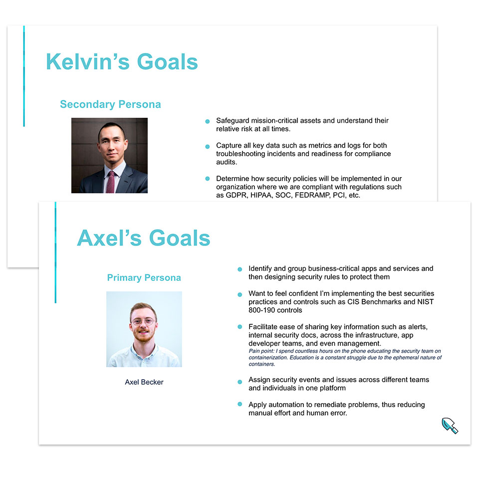
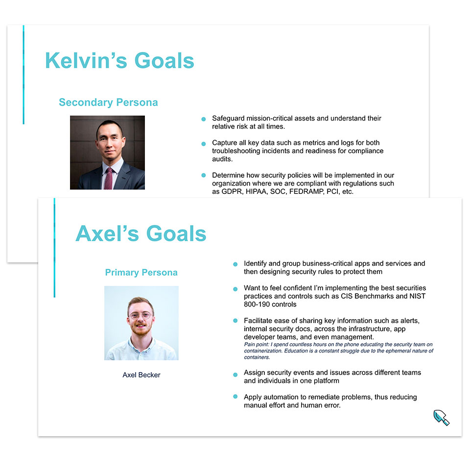

Sysdig is a powerful monitoring and security platform for cloud-native infrastructures. With the rise of microservice and container technology came a need for an enterprise-grade security and monitoring solution for large corporations as they migrate to this new architecture. Sysdig seeks to fill that need.
As the lead product designer for Sysdig it is my responsibility to spearhead design projects and deliver impactful design solutions for both our users and the company.
 

A startup, in the service of large enterprise clients, once it reaches a certain size has to shift the way that it does business. And this shift is also reflected in the design process.
No longer is it acceptable to ship rapid prototypes and design iterations, as young startups wont to do when they are looking for product-market fit. Enterprise users expect fewer updates, but for those updates to be full-featured, well though-out and, above all, stable.
At the same time, when a product team grows the design process has to evolve to accommodate for a greater collaboration between multiple designers and PMs. There is a considerable amount of planning and coordination necessary for this to happen.
A good place to start is to visualize a timeline of the project. Beginning with the end date and plan backwards to make sure that you will meet your eventual deadline. Using design sprints can bring a nice cadence to your work, with clear milestones for each sprint for you and your teammates to coordinate your efforts around.
As always, the design process start with research. Work with PMs and other stakeholders to define objectives and strategies. Perform competitive analysis of the market place and competing products. This should give you a baseline for your design.
Next, work with a UX researcher to identify your users' personas and goals. Schedule user interviews. Talk to users to discover their workflows, mental models and behavior patterns. A clear understanding of the user and their work is a must when designing enterprise software for an esoteric domain.
Synthesize your research into a brief for your design team. Engage them in group exercises. Brainstorm solutions together, and build consensus around a direction for the design.
Create design mockups and prototypes for user testing. Iterate your design based on user feedback until they are satisfied. During this period, it is useful to hold weekly design critiques with your team, as a way to solicit their ideas and ensure that your design aligns with the team's values.
Spec the feature for engineering review, and collaborate with visual designers on the design details.
Phew!
It is a lot of work, but necessary in order to deliver thoughtful, well-researched, and collaborative design.